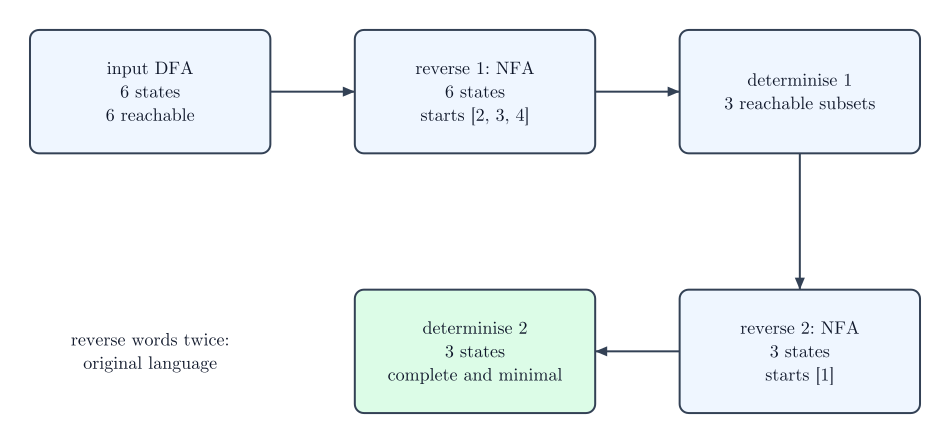
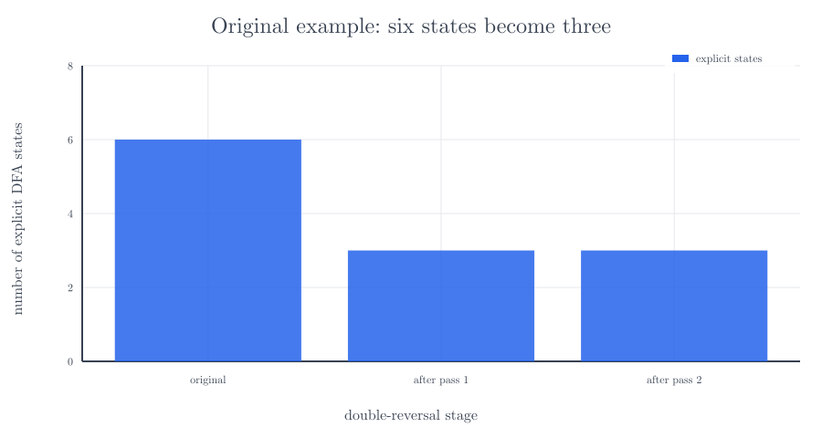
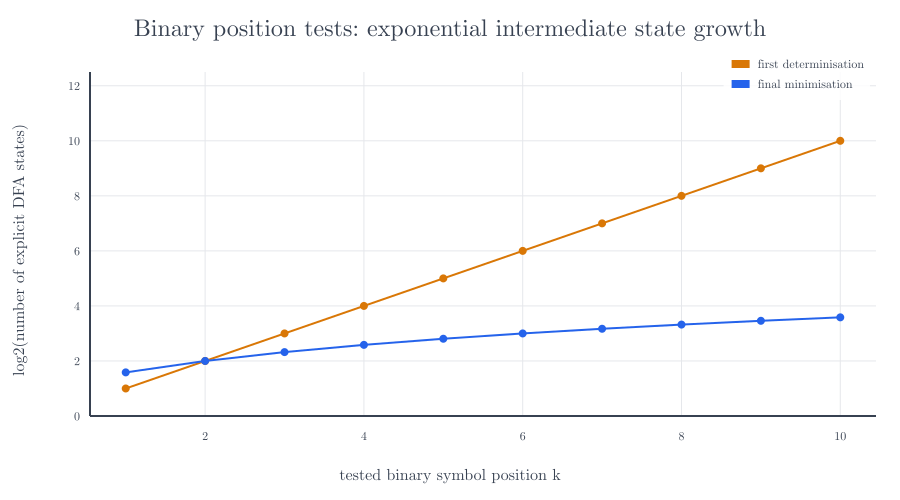

Brzozowski Minimisation: Actual Subsets and Double Reversal
Abstract
Given a deterministic finite automaton, construct a smallest complete machine accepting exactly the same words. Reversing transitions and determinising twice achieves this without partition refinement, but an intermediate machine can be exponentially larger. We retain the original six-state example, inspect its actual subset states, and prove whole-language equality with a native product search. An unreachable-state counterexample qualifies the first-pass minimality claim, and a binary-position family verifies exact state growth.
Original six-state example: two reversals, three final states
The original alphabet is {0,1}, the start state is zero, and accepting states are {2,3,4}. Zero toggles between the two initial nonaccepting states until one is read. A first one enters an accepting region; a second one reaches the rejecting sink five. The language is therefore all binary words with exactly one occurrence of one. Its complete minimal machine needs three states: no ones yet, exactly one, and at least two.
Reversal keeps state labels, flips every explicit edge and swaps initial and accepting roles. It produces an epsilon-free NFA, potentially with several initial states. Determinisation constructs only reachable subsets. Both minimisation passes retain an explicit empty-subset trap when it is reachable. The diagram and subset tables read the actual native pipeline, with no replay.
#include <dm/dm.hpp>
int main() {
std::filesystem::create_directories("build");
const dm::algorithms::DFA input{6,2,{{1,2},{0,3},{4,5},{4,5},{4,5},{5,5}},0,{0,0,1,1,1,0}};
const auto trace=dm::algorithms::brzozowski_minimize_trace(input);
dm::graphics::Diagram diagram(65,1100);
dm::graphics::DiagramNodeStyle style;style.width=3.7;style.height=1.9;
diagram.node("input",{0,0},std::format("input DFA\n{} states\n{} reachable",input.num_states,trace.reachable_input_states.size()),style)
.node("reverse1",{5,0},std::format("reverse 1: NFA\n{} states\nstarts {}",trace.first_reversal.num_states,trace.first_reversal.start_states),style)
.node("first",{10,0},std::format("determinise 1\n{} reachable subsets",trace.first.dfa.num_states),style)
.node("reverse2",{10,-4},std::format("reverse 2: NFA\n{} states\nstarts {}",trace.second_reversal.num_states,trace.second_reversal.start_states),style);
style.fill={220,252,231};
diagram.node("final",{5,-4},std::format("determinise 2\n{} states\ncomplete and minimal",trace.second.dfa.num_states),style)
.edge("input","reverse1").edge("reverse1","first").edge("first","reverse2").edge("reverse2","final")
.text({0,-4},"reverse words twice:\noriginal language")
.save_svg("build/brzozowski_pipeline.svg");
std::print("| stage | DFA state | represented source-NFA subset | accepts | on 0 | on 1 |\n"
"| :--- | ---: | :--- | :--- | ---: | ---: |\n");
for (const auto& [name,stage]:std::vector<std::pair<std::string,const dm::algorithms::PowersetTrace*>>{
{"first",&trace.first},{"second",&trace.second}})
for (int state=0;state<stage->dfa.num_states;++state)
std::print("| {} | {} | {} | {} | {} | {} |\n",name,state,stage->subsets[state],stage->dfa.accept[state]!=0,
stage->dfa.delta[state][0],stage->dfa.delta[state][1]);
const auto equality=dm::algorithms::dfa_equivalence(input,trace.second.dfa);
if (!equality.equivalent) return 1;
std::print("\nWhole-language equality: {}; reachable product pairs examined: {}.\n",equality.equivalent,equality.pairs_examined);
}| stage | DFA state | represented source-NFA subset | accepts | on 0 | on 1 |
|---|---|---|---|---|---|
| first | 0 | [2, 3, 4] | false | 0 | 1 |
| first | 1 | [0, 1] | true | 1 | 2 |
| first | 2 | [] | false | 2 | 2 |
| second | 0 | [1] | false | 0 | 1 |
| second | 1 | [0] | true | 1 | 2 |
| second | 2 | [] | false | 2 | 2 |
Whole-language equality: true; reachable product pairs examined: 6.

The first subsets are {2,3,4}, {0,1} and the empty set. The second subsets are {1}, {0} and the empty set. A subset is accepting exactly when it contains an accepting state of the NFA being determinised. In the first reversal, original start zero is the accepting NFA state; in the second reversal, first-DFA start zero is accepting. The two layers of subset labels therefore have different source state spaces, even though their output DFAs happen to have the same transition table in this example.
Why reachability matters to the minimality argument
For a reachable deterministic input A, consider distinct subsets S and T in the determinised reverse. Choose a state q belonging to exactly one of S,T. Reachability supplies a word w taking A's start to q. Determinism means that reading the reversed word from a subset in the reversed automaton reaches an accepting state exactly when that subset contains q. Thus S and T are distinguished by a word. Every generated subset is reachable by construction, so the resulting complete DFA is minimal, including a reachable empty trap.
An arbitrary input DFA can contain unreachable states, so this reasoning need not apply to the first pass. However, the first pass always produces a reachable deterministic machine. The second reverse-and-determinise then satisfies the argument and accepts the original language, since reversing words twice is the identity. This is the double-reversal principle associated with Brzozowski's Theorem 13; the report uses an explicit complete-DFA convention.
Exact equality and distinguishing the three final states
Testing only words of length at most six was a useful original smoke test, but it did not prove equality of all words. The new native comparison explores reachable pairs of states in the two DFAs. A pair with different acceptance flags yields a distinguishing word. Exhausting the finite product without such a pair proves whole-language equality. Breadth-first exploration also returns a shortest counterexample, with ascending-symbol lexicographic ties. Missing transitions in either machine behave as rejecting self-loop sinks.
For this three-state result, exact comparisons between different choices of start state provide a second check: every pair has a distinguishing word. The empty vector in the table denotes epsilon, not a failed search. All three states are reachable, so pairwise distinction establishes minimality as well as the earlier language-equivalence check.
#include <dm/dm.hpp>
int main() {
std::filesystem::create_directories("build");
const dm::algorithms::DFA input{6,2,{{1,2},{0,3},{4,5},{4,5},{4,5},{5,5}},0,{0,0,1,1,1,0}};
const auto trace=dm::algorithms::brzozowski_minimize_trace(input);
const auto& minimal=trace.second.dfa;
if (dm::algorithms::dfa_reachable_states(minimal).size()!=std::size_t(minimal.num_states)) return 1;
std::print("| start states compared | shortest distinguishing word | left accepts | right accepts | product pairs examined |\n"
"| :--- | :--- | :--- | :--- | ---: |\n");
for (int left=0;left<minimal.num_states;++left) for (int right=left+1;right<minimal.num_states;++right) {
auto a=minimal,b=minimal;a.start=left;b.start=right;
const auto result=dm::algorithms::dfa_equivalence(a,b);
if (result.equivalent) return 1;
const bool accepts_left=dm::algorithms::dfa_accepts(a,result.witness);
const bool accepts_right=dm::algorithms::dfa_accepts(b,result.witness);
if (accepts_left==accepts_right) return 1;
std::print("| {} and {} | {} | {} | {} | {} |\n",left,right,result.witness,accepts_left,accepts_right,result.pairs_examined);
}
dm::graphics::RPlot::barplot({double(input.num_states),double(trace.first.dfa.num_states),double(minimal.num_states)},
{"original","after pass 1","after pass 2"},"explicit states",dm::RGB{37,99,235})
.title("Original example: six states become three")
.x_label("double-reversal stage").y_label("number of explicit DFA states")
.y_limits(0,8).size(900,480).save_svg("build/brzozowski.svg");
}| start states compared | shortest distinguishing word | left accepts | right accepts | product pairs examined |
|---|---|---|---|---|
| 0 and 1 | [] | false | true | 1 |
| 0 and 2 | [1] | true | false | 2 |
| 1 and 2 | [] | true | false | 1 |

Unreachable accepting states and complete-machine controls
Consider two unary states: start zero rejects and loops to itself, while unreachable state one accepts but also moves to zero. The language is empty. The reversed NFA starts at one and accepts at zero. Its reachable subsets are {1} and the empty set, both rejecting: the first pass has two equivalent states and is not minimal. The second pass has one rejecting state, as required. This qualifies the original report's claim that both passes are always minimal.
The shared representations now validate dimensions, counts, start states, targets and input symbols before indexing containers. A missing DFA target is -1 and denotes an implicit rejecting sink. Default construction denotes a valid zero-state, zero-alphabet empty-language DFA with start=-1. Completing or minimising it produces one explicit rejecting state. This safely defined default preserves aggregate field order and types; its formatted start value is now -1. NFA transitions remain epsilon-free.
#include <dm/dm.hpp>
int main() {
const dm::algorithms::DFA unreachable{2,1,{{0},{0}},0,{0,1}};
const auto trace=dm::algorithms::brzozowski_minimize_trace(unreachable);
std::print("Reachable original states: {}. First-pass subsets: {}.\n\n",trace.reachable_input_states,trace.first.subsets);
const dm::algorithms::DFA reject_all{1,1,{{0}},0,{0}};
const auto equality=dm::algorithms::dfa_equivalence(trace.first.dfa,reject_all);
std::print("First pass: {} states, equivalent to one rejecting state: {}. Final pass: {} state.\n\n",
trace.first.dfa.num_states,equality.equivalent,trace.second.dfa.num_states);
struct Example {std::string name;dm::algorithms::DFA machine;};
const std::vector<Example> examples{
{"default empty machine",{}},{"epsilon only",{1,1,{{-1}},0,{1}}},
{"all unary words",{1,1,{{0}},0,{1}}},{"no unary words",{1,1,{{0}},0,{0}}},
{"accepting zero-symbol start",{2,0,{{},{}},1,{0,1}}},
{"no start, despite accepting states",{2,2,{{0,1},{1,0}},-1,{1,1}}}};
std::print("| case | input explicit states | minimal complete states | exact same language |\n"
"| :--- | ---: | ---: | :--- |\n");
for (const auto& example:examples) {
const auto result=dm::algorithms::brzozowski_minimize(example.machine);
const auto proof=dm::algorithms::dfa_equivalence(example.machine,result);
if (!proof.equivalent) return 1;
std::print("| {} | {} | {} | {} |\n",example.name,example.machine.num_states,result.num_states,proof.equivalent);
}
try {
dm::algorithms::brzozowski_minimize(dm::algorithms::DFA{1,1,{{2}},0,{0}});return 1;
} catch (const std::invalid_argument&) {
std::print("\nAn out-of-range target is rejected before constructing stages.\n");
}
try {
dm::algorithms::brzozowski_minimize_trace(dm::algorithms::binary_kth_symbol_dfa(5),{31,0});return 1;
} catch (const std::runtime_error&) {
std::print("A first-stage cap of 31 rejects the 32-subset example without returning a partial minimum.\n");
}
}Reachable original states: [0]. First-pass subsets: [[1], []].
First pass: 2 states, equivalent to one rejecting state: true. Final pass: 1 state.
| case | input explicit states | minimal complete states | exact same language |
|---|---|---|---|
| default empty machine | 0 | 1 | true |
| epsilon only | 1 | 2 | true |
| all unary words | 1 | 1 | true |
| no unary words | 1 | 1 | true |
| accepting zero-symbol start | 2 | 1 | true |
| no start, despite accepting states | 2 | 1 | true |
An out-of-range target is rejected before constructing stages. A first-stage cap of 31 rejects the 32-subset example without returning a partial minimum.
A positive stage cap is checked before creating an excess subset; zero means unlimited. It is a state-count limit, not a byte limit: source validation, large subsets and destination-union temporaries can still be expensive. Likewise, an exact comparison's optional product-pair cap throws when exhausted; it never reports equality from an incomplete exploration.
Controlled exponential growth: kth symbol from the beginning or end
The native binary-position generator accepts a word exactly when its kth symbol from the beginning exists and is one. A prefix counter followed by accepting/rejecting sinks gives k+2 reachable states. Those counter states are distinguishable by how many symbols are still needed before the tested position, so this complete machine is already minimal.
Reversing the language tests the kth symbol from the end. It must remember k binary symbols. All 2k length-k words give different histories: if two histories differ at index j from the left, appending j zeros makes that differing bit the kth symbol from the end. Thus those histories are distinguishable. Conversely, storing the last k bits, padded with leading zeros for short words, suffices. The first stage therefore has exactly 2k states, while the second returns to k+2. The table checks both counts rather than assuming every reversal reduces an automaton.
#include <dm/dm.hpp>
int main() {
std::filesystem::create_directories("build");
std::vector<double> position,first_log,final_log;
std::print("| position k | input states | first-pass states | 2^k | final states | k+2 | first source arcs scanned | second source arcs scanned |\n"
"| ---: | ---: | ---: | ---: | ---: | ---: | ---: | ---: |\n");
for (int k=1;k<=10;++k) {
const auto input=dm::algorithms::binary_kth_symbol_dfa(k);
const auto expected_first=std::size_t{1}<<k;
const auto trace=dm::algorithms::brzozowski_minimize_trace(input,{expected_first,std::size_t(k+2)});
const auto& result=trace.second.dfa;
if (std::size_t(trace.first.dfa.num_states)!=expected_first || result.num_states!=k+2 ||
!dm::algorithms::dfa_equivalence(input,result).equivalent) return 1;
std::print("| {} | {} | {} | {} | {} | {} | {} | {} |\n",k,input.num_states,trace.first.dfa.num_states,
expected_first,result.num_states,k+2,trace.first.nfa_arcs_examined,trace.second.nfa_arcs_examined);
position.push_back(k);first_log.push_back(std::log2(double(trace.first.dfa.num_states)));
final_log.push_back(std::log2(double(result.num_states)));
}
dm::graphics::RPlot::create().lines(position,first_log,"first determinisation",dm::RGB{217,119,6},2)
.points(position,first_log,"",dm::RGB{217,119,6},4)
.lines(position,final_log,"final minimisation",dm::RGB{37,99,235},2)
.points(position,final_log,"",dm::RGB{37,99,235},4)
.title("Binary position tests: exponential intermediate state growth")
.x_label("tested binary symbol position k").y_label("log2(number of explicit DFA states)")
.y_limits(0,12.5).size(900,500).save_svg("build/brzozowski_reversal_growth.svg");
}| position k | input states | first-pass states | 2^k | final states | k+2 | first source arcs scanned | second source arcs scanned |
|---|---|---|---|---|---|---|---|
| 1 | 3 | 2 | 2 | 3 | 3 | 6 | 6 |
| 2 | 4 | 4 | 4 | 4 | 4 | 16 | 16 |
| 3 | 5 | 8 | 8 | 5 | 5 | 40 | 40 |
| 4 | 6 | 16 | 16 | 6 | 6 | 96 | 96 |
| 5 | 7 | 32 | 32 | 7 | 7 | 224 | 224 |
| 6 | 8 | 64 | 64 | 8 | 8 | 512 | 512 |
| 7 | 9 | 128 | 128 | 9 | 9 | 1152 | 1152 |
| 8 | 10 | 256 | 256 | 10 | 10 | 2560 | 2560 |
| 9 | 11 | 512 | 512 | 11 | 11 | 5632 | 5632 |
| 10 | 12 | 1024 | 1024 | 12 | 12 | 12288 | 12288 |

For a nonempty complete input with n states, the final minimal DFA has at most n states. A partial input may need one explicit rejecting sink, making n+1 a sufficient bound, including the zero-state empty machine. The intermediate state count can still be exponential. Treating both passes as unrelated full powersets obscures this final-size guarantee.
The implementation stores explicit subset members in a map and work list, sorts destination unions, and compares vector keys. Work depends on those union sizes and comparisons as well as created states and alphabet size. Ordinary calls discard provenance/reversal snapshots after use; a trace retains them as owned data and can be substantially larger. There is no constant-work per subset or constant-byte per state claim. Exact language comparison uses a sparse reachable product, with map lookup cost and stored predecessor records; it does not preallocate every possible state pair.
References and verification
J. A. Brzozowski, Canonical regular expressions and minimal state graphs for definite events, Mathematical Theory of Automata, 1963, 529–561, Theorem 13. The author's [1989 clarification, reproduced on page 67 of these lecture slides](https://liacs.leidenuniv.nl/~hoogeboomhj/second/secondcourse.pdf) identifies the 1963 publication and its 1962 discovery. J. Berstel, L. Boasson, O. Carton and I. Fagnot, [Minimization of Automata](https://arxiv.org/abs/1010.5318), section 3, discusses the reversal principle and reversal-growth examples. M. O. Rabin and D. Scott (1959), Finite Automata and Their Decision Problems, [doi:10.1147/rd.32.0114](https://doi.org/10.1147/rd.32.0114), provides the nondeterministic-automaton and finite-word decision background.
The six-state graph and boundary controls are explicit, and the binary-position family is generated in the core; no observational dataset or random seed is needed by the report. Native tests compare 17,626 complete binary DFAs through three states and 1,000 partial/no-start machines with an independent table-filling minimality and language oracle. Other tests check actual subset transitions and counters, exact counterexample order, limits, malformed inputs, zero alphabets and exponential growth. All eighteen public documentation examples are compiled and run. Every report block is an editable complete C++ programme, and SVG figures are saved locally before being copied into figures.